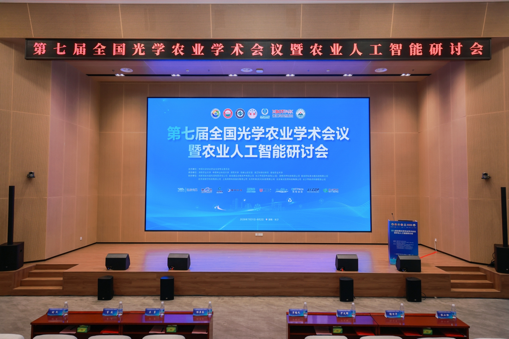
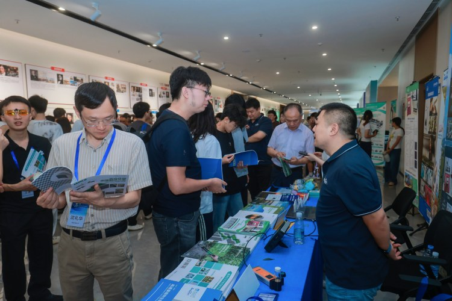
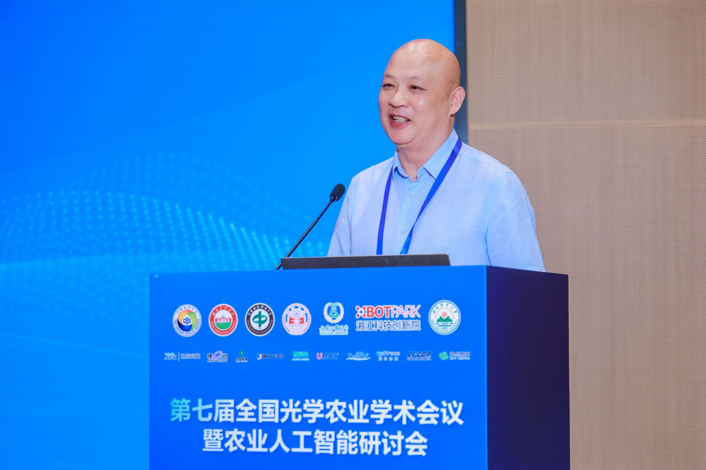
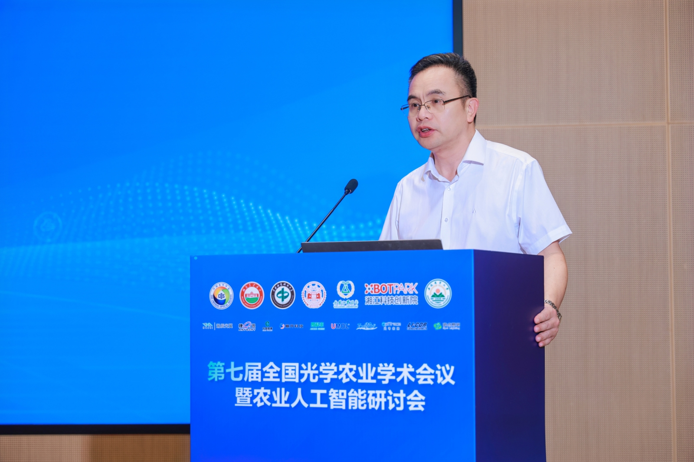
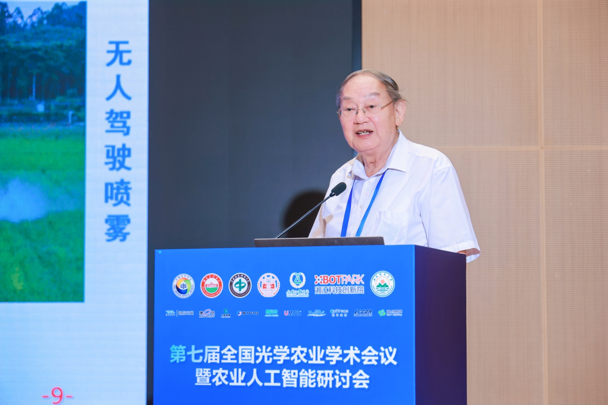
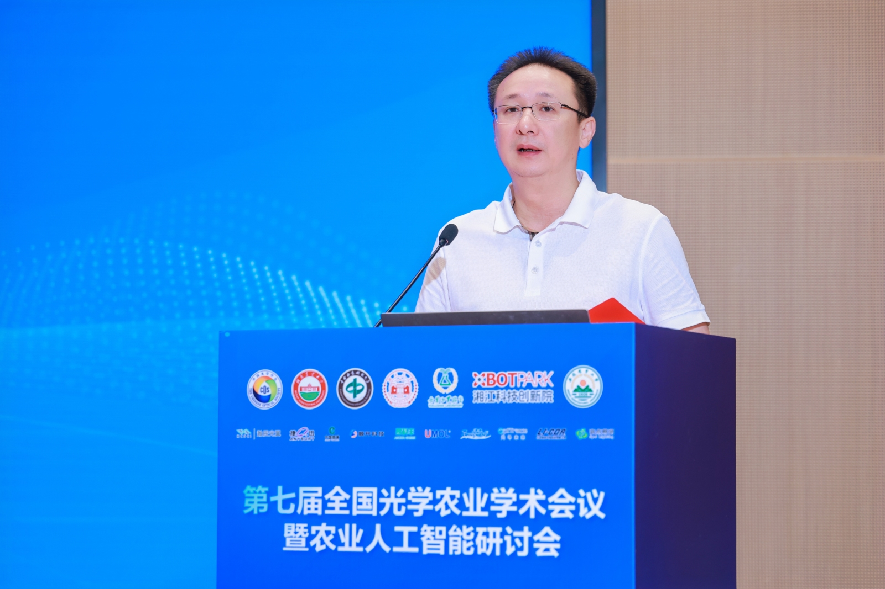
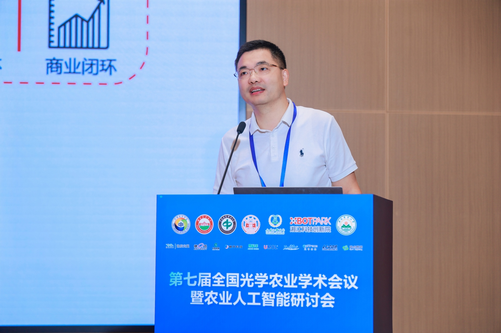
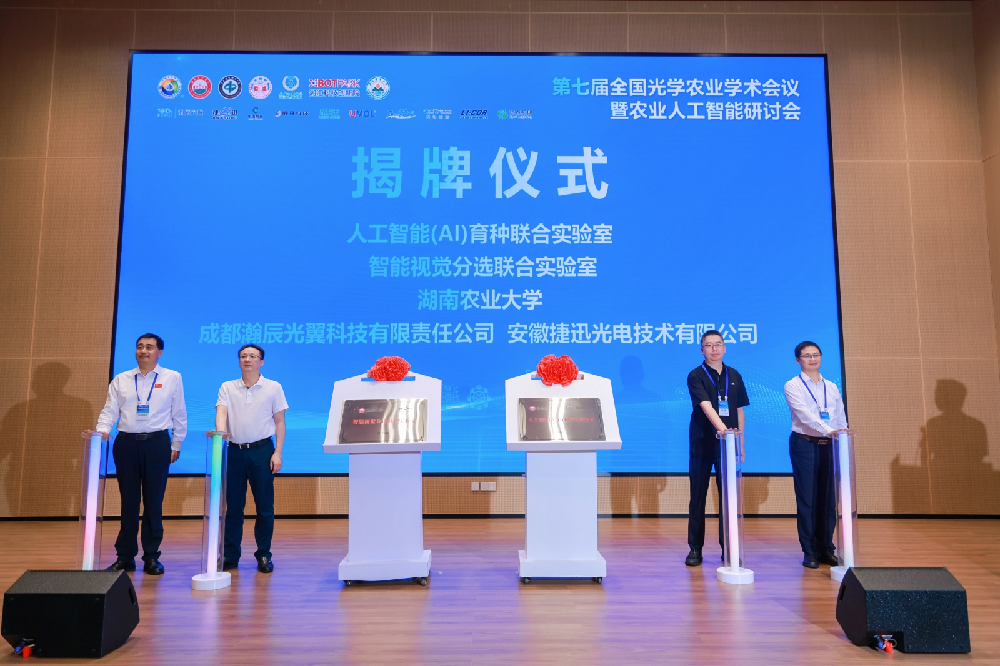

光智融合“照”进田间，这场学术盛会解锁智慧农业新未来
一束光，如何照亮未来农业？一套算法，如何改变传统耕作？
8月1日，第七届全国光学农业学术会议暨农业人工智能研讨会在长沙岳麓山实验室举行开幕仪式。本次会议由中国光学学会农业光学专业委员会主办，湖南农业大学、中南林业科技大学、湖南大学、岳麓山实验室、湘江科技创新院及安徽农业大学联合承办，百余位专家学者与产业代表齐聚一堂，聚焦“光学农业+人工智能”主题展开交流，为智慧农业从理论走向田间按下“加速键”。


从“感知”到“决策”：前沿技术定义未来农业
新一轮科技革命浪潮下，人工智能、先进传感、光电信息等新技术正深刻改变着农业的面貌。光学技术在其中扮演了什么角色？
中国光学学会副监事长李焱在开幕式上给出清晰判断：光学技术凭借非接触、精准、信息维度丰富等优势，已成为农业感知、监测、决策与执行全链条的核心支撑。但他同时指出，从实验室到田间地头，还需要打通学科之间、科研与产业之间、高校与企业之间的壁垒，才能真正形成从科学问题凝练到示范应用的完整创新链条。

湖南省科学技术厅党组成员、副厅长尹文辉则从湖南实际出发，向与会专家发出邀请。他表示，湖南作为农业大省，正依托岳麓山实验室等平台，在生物种业、智慧感知、设施农业等领域强化布局，希望通过深化与全国专家的合作，共同打造智慧农业创新高地。

那么，如何让这些前沿技术真正服务农业生产？院士专家从不同角度给出了回答。
中国工程院院士罗锡文将智慧农业凝练为“数字化感知、智能化决策、精准化作业、智慧化管理”四层架构。他分享了一组来自实践的数据：利用高光谱技术捕捉水稻长势，生成“处方图”实施精准施肥，肥料用量减少20%以上——既降成本，又减污染。其团队2020年在广东增城建成全球首个水稻无人农场，如今耕、种、管、收已实现全程无人化作业。

中国工程院院士、国家农业信息化工程技术研究中心主任赵春江则展示了光学检测的另一重“功力”：一束光打到农产品上，通过分析光谱吸收与反射特征，便能判断糖度、酸度乃至内部隐性缺陷。其团队研发的智能化分选装备，每小时可对数吨果蔬完成品质分级；激光诱导击穿光谱技术可在田间快速检测土壤中30余种元素，将传统实验室检测周期从几天压缩至十分钟左右。
从“靠手感”到“靠光谱”，从“送检等结果”到“现场出数据”，光学与AI的融合正推动农业从经验驱动走向数据驱动。
从“书架”到“货架”：产学研协同迈出实质步伐
科技创新的生命力，不仅在于突破前沿，更在于解决产业实际需求。如何让实验室里的科研成果跨越“最后一公里”？大会用务实行动作答。
“深入推进与湖南省农科院和农业头部企业的深度融合，围绕机制共建、学生共培、人才共引、科研共创、资源共享等五大方面精准发力，让创新成果走出书本、走进产业一线。”湖南农业大学党委书记兰勇在致辞中表示，学校园艺学获评A类学科，2个学科跻身ESI全球前1‰，8个学科稳居全球前1%，汇聚了5位农业领域院士领衔的科研创新团队，累计斩获28项国家级科技奖项，当前学校持续推进教科人机制体制一体化改革，推动多学科交叉融合，着力培育一批能投身农业农村现代化、引领智慧农业发展的高素质人才。

湘江科技创新院执行院长卢红波则从科创生态的角度分享了思考。一个创新想法要成为市场认可的产品，往往要跨越技术验证、工程样机、批量量产等多道关卡，每一道都可能成为“断点”。湘江科技创新院正探索构建集新工科人才培养、技术研发和产业孵化于一体的创新生态，聚焦智慧农业、智能制造等方向，帮助创新项目从概念走向量产。

开幕式上，湖南农业大学与成都瀚辰光翼科技有限责任公司共建的“人工智能（AI）育种联合实验室”、与安徽捷迅光电技术有限公司共建的“智能视觉分选联合实验室”正式揭牌。前者聚焦AI视觉算法与作物表型分析，赋能现代育种；后者围绕农产品品质检测与智能分级，提升加工链智能化水平。

从一粒种子的精准选育，到一片农田的智能管理，光学与AI的融合正在重塑农业全链条。据悉，本次会议还将开展专业委员会年会、平行分论坛、企业家论坛、人才培养方案论证及产业联盟研讨，持续推动农业、光学、人工智能等领域的交叉融合与成果落地。
（来源：湖南日报·新湖南客户端）